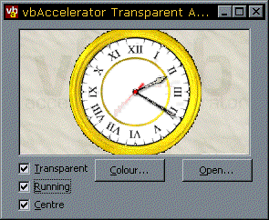
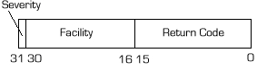

VB5 Transparent AVI Player Control (13K)
VB5 Transparent AVI Player Control (13K)
 VB5 Transparent AVI Player Demonstration (57K)
VB5 Transparent AVI Player Demonstration (57K)
 VB5 Transparent AVI Player Full Source (87K)
VB5 Transparent AVI Player Full Source (87K)
 VB6 Transparent AVI Player Control (13K)
VB6 Transparent AVI Player Control (13K)
 VB6 Transparent AVI Player Demonstration (56K)
VB6 Transparent AVI Player Demonstration (56K)
 VB6 Transparent AVI Player Full Source (86K)
VB6 Transparent AVI Player Full Source (86K)
 23 Nov 2003
23 Nov 2003
The last version of the control only rendered the AVI transparently when a background bitmap was selected. Corrected so now the BackColor of the control is displayed when no background bitmap is present.
 Subclassing Without The Crashes
Subclassing Without The Crashes
 Finding Which DLL Contains an API Call
Finding Which DLL Contains an API Call

Transparent AVI Player Control
Play any AVI file using the API directly; also demonstrates how to implement transparency
The Animation control supplied with VB (and from various other VB websites) is derived from the implementation within COMCTL32.DLL. However, this implementation only allows you to play AVIs with no audio stream. Also, its idea of transparency isn't quite what you might expect: setting an AVI to transparent only sets one of the colours in the AVI to another colour, rather than allowing you to draw part of the background.
If you want to play any type of AVI, or you want to modify the contents of the transparent area, you must load and draw the AVI yourself using the API. Luckily, this API is easily accessible to VB coders.
The Transparent AVI Control
The transparent AVI control supplied with the download is a simple implementation based around reuse of a class, cAVICtrl.cls. This class allows you to play an AVI onto any window. The implementation includes code to tile a bitmap into the background of the control. Use of the control is pretty self explanatory. To set up the control to show an AVI transparently over a background bitmap the code looks like this:
With vbalAVIPlayer1 .Filename = App.Path & "\clock.avi" .Load .Picture = picBackground.Picture .Transparent = True .TransparentColor = &H0& End With
To start and stop the AVI playing, use the Running property.
The API for Playing AVI
Basically the API for playing AVIs is found in two DLLs: the AVI support DLL Avifil32.Dll and the Video for Windows DLL msvfw32.dll (incidentally, to find out more about working out which DLL contains which function, have a look at the article Finding Which DLL Contains an API Call.). AVI loading, reading and interrogation is provided by the AVI support DLL, whilst Video for Windows provides some functions for rendering a DIB directly from memory onto a device context, without having to create an intermediate GDI DIB Section or memory device context to Blit it from.
The DrawDib API
The DrawDib API is aimed at fast rendering of DIBs (Device Independent Bitmaps) to screen without the intermediate use of any GDI objects. This was important in 16 bit versions of windows, however, most graphic card device drivers now deal with DIBs very quickly so the performance aspect of this API is no longer relevant. It does help simplify drawing AVI frames, however, so it is used in this project. There are three DrawDib API calls used:
- DrawDibOpen
Opens a DrawDib device and returns a handle to it. - DrawDibDraw
Draws a DIB from memory onto a device context. This call is very similar to the GDI StretchBlt call except rather than taking a source DC it takes a pointer to the DIB bits and a pointer to the DIB colour table. These pointers are provided directly by the AVI API, as we will see next. - DrawDibClose
Closes a previously opened DrawDib device.
The AVI Support API
Actually reading and use AVIs is performed using this DLL. To start using the DLL, call AVIFileInit and when finished, call AVIFileExit.
To open an AVI file for playing, the AVIStreamOpenFromFile function is used:
Private Declare Function AVIStreamOpenFromFile Lib "avifil32.dll" _
Alias "AVIStreamOpenFromFileA" ( _
ppavi As Any, ByVal szFile As String, _
ByVal fccType As Long, ByVal lParam As Long, _
ByVal mode As Long, pclsidHandler As Any _
) As Long
- ppAVI is a pointer to the AVI stream, and is returned when the call returns. Passing a long value in as this parameter allows us to return this pointer.
- szFile is the file to open.
- fccType defines which type of stream we want to read from, in this case the video stream (MMIO type "vids", which is &H73646976 as a long value)
- lParam is an application defined value, and can be set to anything you want.
- mode is the file mode, the same as the file mode values used in the file APIs in Win32.
- pclsidHandler is a pointer to a CLSID if you take advantage of the OLE interface to the AVI functions (not used in this sample).
The return value from the function is a COM HRESULT. Whilst a HRESULT sounds like it should be a handle to a result, it is actually just a long value where the bits are arranged in a particular way:
Format of a HRESULT value
The most significant bit of the HRESULT (bit 31, which can be extracted by ANDing with &H80000000) determines whether the function call succeeded or failed. It is set for failure.
The bits betwen bit 30 and bit 16 contain what is termed the "facility" code. Microsoft use this to separate different errors out, for example, control errors are supposed to set FACILITY_CONTROL (=10) in this section whilst Win32 errors set FACILITY_WINDOWS (=7).
The low order word is the return code which specifies the code for the success or failure condition.
Since HRESULTs can be either success or failure codes, it is not enough just to check whether the return value is zero or positive. C and C++ coders take advantage of the Macros FAILED and SUCCEEDED which are defined in one of the COM header files; but these are simple to rewrite in VB:
Private Function FAILED(ByVal hr As Long) As Boolean
FAILED = Not (SUCCEEDED(hr))
End Function
Private Function SUCCEEDED(ByVal hr As Long) As Boolean
SUCCEEDED = ((hr And &H80000000) = 0)
End Function
If AVIStreamOpenFromFile succeeds, then the long variable passed into the ppAVI parameter is a pointer to the AVI stream. We can then open the AVI for playing and find out more about the AVI.
To open the stream for playing, we call:
Private Declare Function AVIStreamGetFrameOpen Lib "avifil32.dll" ( _
pavi As Any, lpbiWanted As Any _
) As Long
- pavi Takes a pointer to the AVI stream returned in the ppavi parameter earlier. Because the original return value was a pointer to a pointer (**) we need to pass the value using the ByVal keyword into the pavi method of this call. The same applies for all subsequent calls which take pavi as a parameter.
- lpbiWanted This parameter allows you to pass in a BITMAPINFOHEADER structure indicating the format of DIB you would like the AVI functions to return. It can be set to Null (ByVal 0&) to return the default format.
If this function succeeds it returns a long pointer to the GetFrame interface (pGF), otherwise it returns 0.
Once both the pavi and pGF pointers have been returned, the AVI can then be queried for information about its size, shape and so forth. All AVIs are encoded as a series of "samples" (i.e. frames) which have a particular duration. This function returns the time in milliseconds for a given sample in the AVI:
Private Declare Function AVIStreamSampleToTime Lib "avifil32.dll" _
(pavi As Any, ByVal lSample As Long) As Long
The AVIStreamLength function returns the number of samples in the AVI, which in turn directly indicates the duration of the AVI if passed into the AVIStreamSampleToTime function:
Private Declare Function AVIStreamLength Lib "avifil32.dll" _
(pavi As Any) As Long
To find the position of the first sample in the AVI (which again can be converted into a time using AVIStreamSampleToTime) we use AVIStreamStart:
Private Declare Function AVIStreamStart Lib "avifil32.dll" _
(pavi As Any) As Long
To get more general information about the AVI, such as size, name, samples per second to play and so forth, the AVIStreamInfo function fills in a TAVISTREAMINFO structure for a given AVI stream pointer. The declare of the function looks like this:
Private Declare Sub AVIStreamInfo Lib "avifil32.dll" Alias "AVIStreamInfoA" _
(pavi As Any, psi As TAVISTREAMINFO, ByVal lSize As Long)
Private Type TAVISTREAMINFO ' this is the ANSI version
fccType As Long
fccHandler As Long
dwFlags As Long '/* Contains AVITF_* flags */
dwCaps As Long
wPriority As Integer
wLanguage As Integer
dwScale As Long
dwRate As Long ' /* dwRate / dwScale == samples/second */
dwStart As Long
dwLength As Long '; /* In units above... */
dwInitialFrames As Long
dwSuggestedBufferSize As Long
dwQuality As Long
dwSampleSize As Long
rcFrame As RECT
dwEditCount As Long
dwFormatChangeCount As Long
szName(0 To 63) As Byte
End Type
To find out more, have a look at the code in the cAviCtrl.cls in the full source code download.